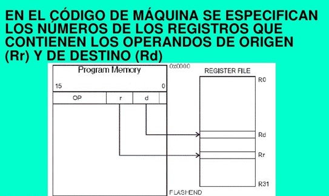

2.3.3 Conjunto de instrucciones: Características y Funciones
Ante el diseño de un nuevo ordenador de propósito general hay que plantearse la siguiente cuestión: ¿Qué tipos de instrucciones deben ser incluidos en su conjuntos de instrucciones? Antes de responder a esta pregunta, analizaremos las características que deben tener los juegos de instrucciones de las máquinas. Los conjuntos de instrucciones de las máquinas deben tender a poseer una serie de propiedades, bastante ideales e imprecisas, que pueden resumirse en las siguientes: El conjunto de instrucciones de un computador debe ser completo en el sentido de que se pueda construir un programa para evaluar una función computable usando una cantidad de memoria razonable y empleando un tiempo moderado, es decir, el número de instrucciones de ese programa no debe ser demasiado elevado. Los juegos de instrucciones también tienen que ser eficientes, esto significa que las funciones más necesarias deben poder realizarse usando pocas instrucciones.
El conjunto de instrucciones de una máquina debe ser regular, es decir debe ser simétrico (por ejemplo, si existe una instrucción de desplazamiento a la izquierda, debe haber otra de desplazamiento a la derecha, etc.) y ortogonal, es decir, deben poder combinarse, en la medida de lo posible, todos las operaciones con todos los tipos de datos y modos de direccionamiento. En muchas ocasiones, también se le debe exigir a un computador que su juego de instrucciones sea compatible con modelos anteriores.
Tipos de instrucciones
Una máquina puede llegar a funcionar con un juego de instrucciones muy limitado (recuérdese, por ejemplo, la máquina de Turing que sólo tiene 4 instrucciones, incluso se han diseñado máquinas teóricas con menos instrucciones), esto simplificaría mucho los circuitos de la máquina. Sin embargo, un conjunto de instrucciones demasiado simplificado origina, como consecuencia, unos programas demasiado complejos e ineficientes. Es necesario encontrar un compromiso entre la simplicidad del hardware y del software. Un mínimo para llegar a ese compromiso se consigue con los tipos de instrucciones siguientes:
Instrucciones de transferencia de datos.
Instrucciones aritméticas.
Instrucciones lógicas.
Instrucciones de control del flujo del programa (bifurcaciones, bucles, procedimientos, etc.)
Instrucciones de entrada y salida. En los apartados siguientes iremos viendo con detalle algunos de estos tipos de instrucciones. Si bien es cierto que el conjunto de instrucciones debe de cumplir unos mínimos para conseguir una mínima eficiencia en los programas, también se verá que ésta no se aumenta indefinidamente al incrementar el número de instrucciones de la máquina.
